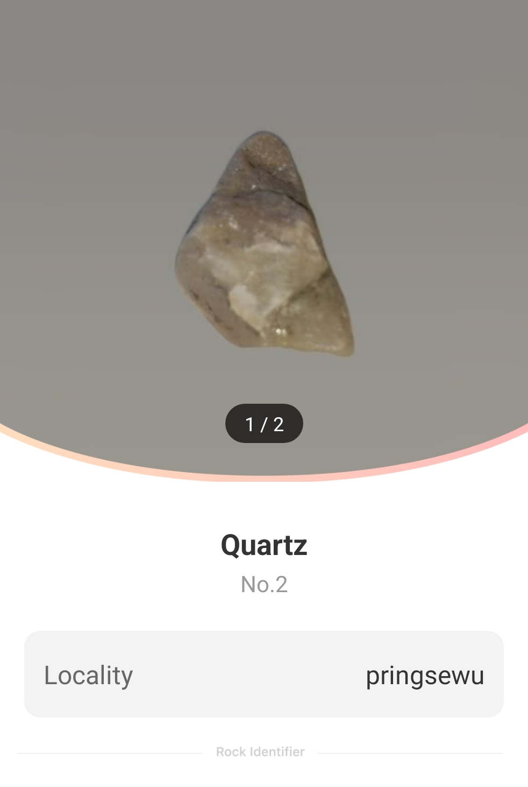
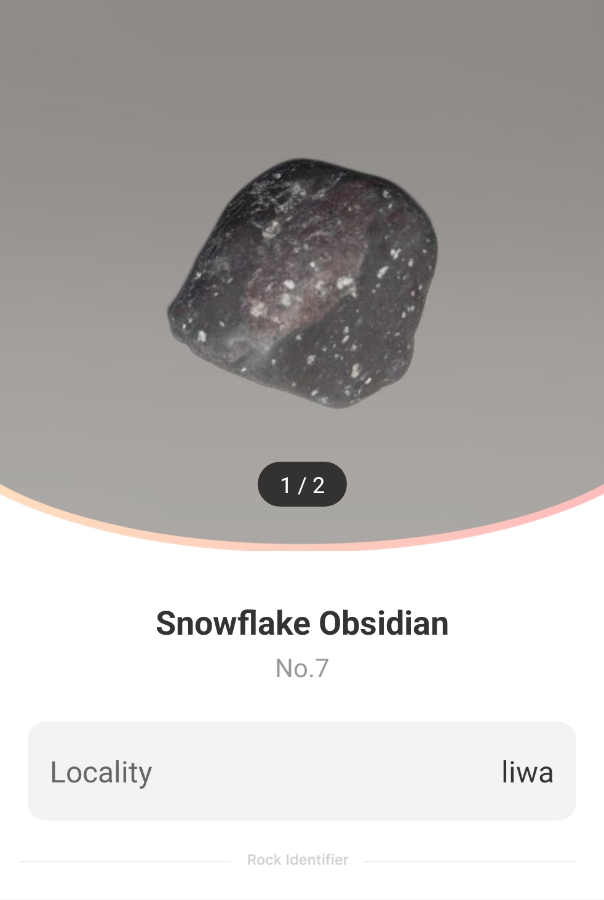
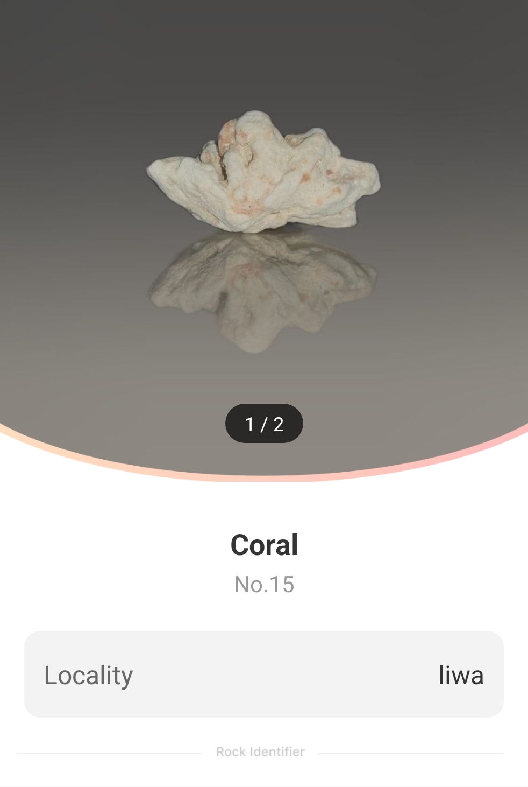
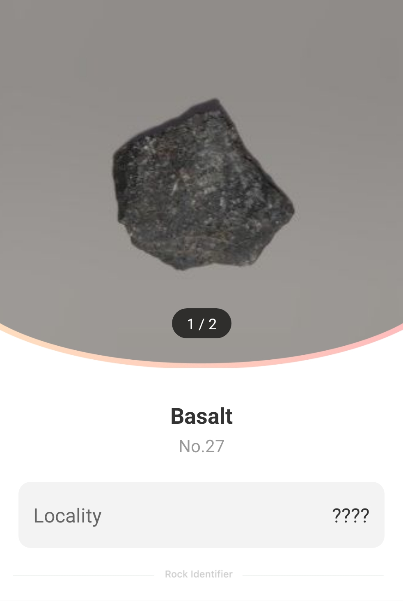
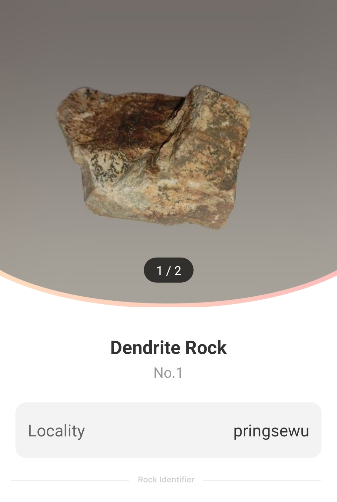

Website ini berisi penelitian saya mengenai batu-batuan.
Didalam web ini terdapat Batu-Batuan yang sudah saya teliti dan permainan tebak-tebakan tentang batu-batuan.
Saya memilih riset tentang batu-batu-batuan
karena saya suka mengoleksi batu.
Saya mengumpulkan batu dari berbagai tempat, seperti lapangan di tepi sawah, sungai, dan pantai.
Penjelasan mengenai batu-batuan yang ada di Website ini bersumber dari: https://rockidentifier.com
Ini adalah beberapa koleksi batu-batuan saya
-

Kuarsa adalah batuan yang dapat ditemukan di berbagai wilayah.
Jenisnya ada bermacam-macam seperti: auraquartz, amethys, citrine, ametrine, smokyquartz, dan lain-lain.
Klafisikasi kimia kuarsa adalah silikat.
Rumusnya SiO2
Salah satu pengunaan Kuarsa yang paling umum adalah sebagai osilator kristal
Beberapa jenis kuarsa digunakan sebagai perhiasan,
misalnya amethyis.

Batu obsidian adalah batu yang terbentuk akibat dari pendinginan yang cepat dari lava permukaan.
Ciri-cirinya ialah warnanya hitam, seperti kaca namun bukan kristal.
Batu ini mememiliki Kandungan Silika (SiO2)sekitar70%.
Batu ini hanya berada di beberapa wilayah saja.
Obsidian memiliki jenis-jenis yang lain seperti:
Mahogany Obsidian, Red Snowflake Obsidian, Snowflake Obsidian, Brown Snowflake Obsidian, dan Rainbow Obsidian.

Koral ada di seluruh laut dan pantai.
Koral memiliki rumus CaCO3
Koral memiliki beberapa jenis yaitu:
Agatized Coral, Agatized Coral tumbled, dan Red Coral.
Koral bisa dijadikan perhiasan dan barang dekorasi.

Basal dapat ditemukan dimana-mana.
Basal mememiliki kandungan silikat(SiO2) 45%-52%.
Basal, karena kekerasannya, biasanya dipecahkan menjadi kerikil
untuk digunakan sebagai bahan konstruksi.

Batu pasir memiliki banyak kegunaan sejak zaman dahulu kala.
Batunya mudah dibentuk sehingga bayak digunakan dalam konstrusi bangunan.
Batu ini juga digunakan oleh pengrajin untuk membuat patung.
Batu pasir memiliki kandungan Silika(SiO2) 60%-70%.
Sifatnya mudah hancur tapi tahan cuaca.

Batu kapur memiliki beragam kegunaan, terutama sebagai
bahan konstruksi pada dinding dan lantai bangunan, serta sebagai batu
paving luar ruangan dan pemberat kereta api.
Batu kapur juga biasa dipakai untuk menulis dan menggambar.

Batu Dendrit dapat berupa batu kristal jenis apa pun yang menunjukkan tanda
bercabang banyak yang menyerupai pohon. Pola-pola ini sebenarnya adalah oksida besi atau mangan yang
dapat ditemukan di berbagai batu, termasuk batu akik, opal, atau jasper.
Pola hiasan Batu Dendrit membuatnya sering dijadikan batu hias. Pola yang
sangat indah cocok untuk perhiasan cabochon.
Potongan batu Dendrit yang besar dapat dijadikan dekorasi interior.
Game tebak-tebakan
Disini ada 2 game tebak-tebakan nama batu.
Game tebak-tebakan nama batu level easy adalah game tebak-tebakan nama batu yang mudah.
Game tebak-tebakan nama batu level hard adalah game tebak-tebakan nama batu yang sulit.
Selamat bermain!